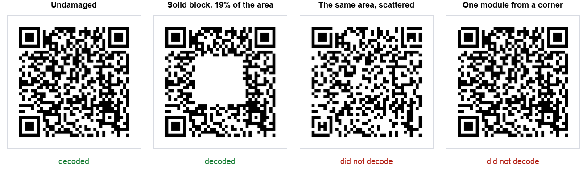

Search for QR code error correction and you will meet the same four numbers everywhere: levels L, M, Q and H recover roughly 7%, 15%, 25% and 30% of a damaged code. Those figures come from the specification and they are not wrong, but they describe how much data the error correction can reconstruct. They say nothing about what happens when a coffee cup leaves a ring on a table card.
So we tested it. We generated the same URL at each error correction level, damaged the codes three different ways, and ran a decoder over every version to find the point where each one stopped working.
We are not the first to do this. Huon Wilson published an empirical look at QR error correction in 2021 and found readability dropping off above roughly 6% damage at level L, 12% at M and 20% at H. Our numbers landed close to those, which is reassuring for both of us, and we have noted where they differ below.
The short version: the headline percentage is close for one kind of damage and wildly optimistic for another, and there is a part of every QR code where 0.08% of damage is fatal.
What we tested and how
Method, so you can judge the numbers:
- One piece of data throughout, a 41 character URL, so the only variable was the error correction level.
- Three damage types: a solid block in the centre, the same total area scattered as individual modules, and damage to a corner finder pattern.
- Damage applied in 1% steps from 1% upwards, recording the last percentage that still decoded.
- Every code checked undamaged first. This turned out to matter, see the note on level Q below.
- Decoding done in software on clean digital images, using OpenCV's QR detector.
One honest limitation up front: a software decoder reading a clean image is more forgiving than a phone camera in a dim restaurant. Treat these numbers as the best case. Real world tolerance is lower, which makes the findings below worse, not better.
The headline result

Those four images are the whole finding. Same code, same error correction level, four very different outcomes that have almost nothing to do with how much was damaged.
Result 1: a solid block, the logo case
This is the damage people actually plan for, a logo or sticker covering the middle of the code. We grew a centred white square until each code gave up:
| Error correction | Commonly quoted | Last size that decoded |
|---|---|---|
| L (Low) | ~7% | 5% |
| M (Medium) | ~15% | 9% |
| H (High) | ~30% | 21% |
Those figures sit close to the independent 2021 results mentioned above, roughly 6%, 12% and 20% for L, M and H. Two separate tests, different tools, similar answers.
Every level came in below its quoted figure. That is not a contradiction of the specification. The quoted percentage is how much codeword data can be reconstructed; covering a physical area also destroys structural information the decoder needs before error correction even begins. The gap between the two is what you actually get.
The practical reading: if you are putting a logo on a level H code, 20% of the area is your ceiling, not 30%. And that is with a software decoder on a clean image.
Result 2: scattered damage is far worse
Here is the finding we did not expect. We took the same total area and, instead of one block, removed individual modules at random across the code:
| Error correction | Solid block | Scattered |
|---|---|---|
| L | 5% | 3% |
| M | 9% | 4% |
| H | 21% | 5% |
Level H drops from 21% to 5%. The same amount of missing ink, four times less tolerance.
The reason is how Reed Solomon error correction is organised. It works on blocks of data, and it can fully rebuild a limited number of blocks. A solid square destroys a few blocks completely, which is exactly the situation the correction is designed for. Scattered damage puts a little corruption into many blocks at once, and the budget runs out long before the total area does.
Why this matters in the real world: the damage that actually happens to printed codes is scattered, not solid. Ink spatter, fading, dust, a scuffed surface, a low quality print. That is the 5% column, not the 21% one.
Result 3: the corners have no protection at all
The three large squares in the corners are finder patterns. A scanner uses them to locate and orient the code before it reads anything. We removed increasing amounts of one:
| Damage to one corner | Share of the whole code | Result |
|---|---|---|
| A sliver | 0.08% | failed |
| A quarter | 0.22% | failed |
| Half | 0.89% | failed |
| The whole square | 3.58% | failed |
A level H code that shrugged off 21% of its area being covered failed with 0.08% missing from a corner. That is roughly a 260 fold difference, decided entirely by location.
Error correction protects the data. It does not protect the structure that lets the decoder find the data in the first place, and no error correction level changes this.
A note on level Q, and why we left it out
We planned to test all four levels. The Q level code failed to decode even undamaged, at every image resolution we tried. That is a limitation of the detector we used rather than a fault in the code, and a phone would very likely read it.
We mention it because it is the reason we check a baseline before running any test. Without that check we would have published a table showing level Q as the worst performer, which would have been completely false and caused by our own tooling.
What this changes in practice
If you are adding a logo
Use level H, keep the logo centred, and treat 20% of the code area as the limit rather than 30%. Never let a logo touch a corner marker. Print larger than you otherwise would, since you have spent the error correction budget on the logo and have none left for print imperfections.
If your codes live somewhere dirty
Table cards, packaging, outdoor signage, workshop labels. The relevant number is the scattered one, around 5% at level H. Protect the surface rather than relying on error correction: lamination, an acrylic holder, a position that does not collect dust.
If you are checking a damaged code
Look at the three corners first. A code with a scuff across the middle will probably still work. A code with a scratch through a corner marker is dead, and cleaning the rest will not help.
If you are choosing an error correction level
Higher is not free. Level H made the same URL a 37 x 37 grid where level M needed only 29 x 29. At a fixed print size that means noticeably smaller modules, which costs scan reliability in exactly the conditions where you wanted the extra protection. Our sizing guide covers that trade off.
Reproducing this
Nothing here needs special equipment. Generate a code, open it in any image editor, paint over parts of it, and try to scan the result. The interesting comparison is the one in the figure above: cover a solid block, then cover the same total area scattered around, and watch the second one fail while the first survives.
If you get different numbers with a different decoder or a phone camera, that is expected and worth knowing.
The summary
Location beats quantity. A level H code survived 21% of its area covered in one block, 5% scattered, and 0.08% removed from a corner marker. If you remember one thing, protect the corners.
Making a code you want to last? All of our generators produce static codes, so nothing on our end can break them later, and you can test any of them the way we did here.